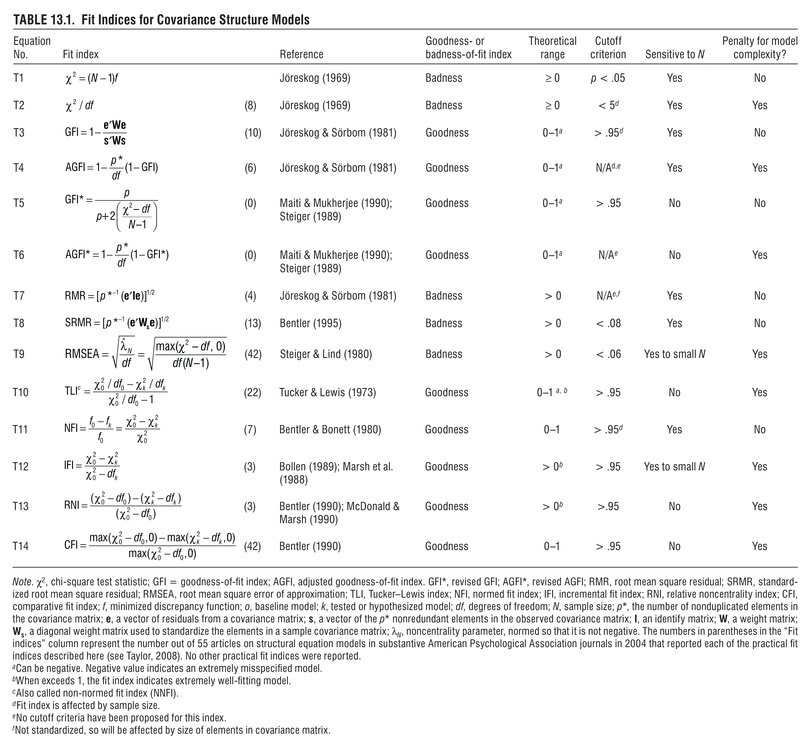

Summary of SEM Model Fit Statistics
I can never keep track of the various model fit statistics. Thankfully, the
Handbook of Structural Equation Modeling
includes a chapter by West et al
including this handy chart:

A few other notes I’ve collected:
χ2
-
For over ~400 obs, χ2 is less useful because it almost
always rejects. (Citation is the Muthén article linked below under SRMR.)
-
We want it to fail to reject, so that saturated model is NOT
better.
-
A lot of people recommend ignoring this.
SRMR
-
Measure of "approximate fit", as opposed to χ2 which is "exact
fit" (and unrealistic in large data situations).
-
Muthén (author of Mplus)
suggests the
following steps:
-
If χ2 fails to reject, we have a good "exact fit" and
there’s no need to use SRMR to examine approximate fit.
-
If χ2 rejects, and SRMR is < .08, and there’s no large
residuals, model is approximately fit. (With larger samples, n > 200)
- χ2 rejects, SRMR > .08, poorly fitting model
TLI/CLI
-
Functions of χ2/df ratio
-
TLI can be outside of 0/1, but is usually truncated. CLI will always in
between 0 and 1 (inclusive).
-
Only useful in large sample sizes or large degrees of freedom (DF).
-
Minimum DF is 2.
-
Muthén discusses it
in this paper about TLI.
Home |
Back to blog
This work is licensed under
CC BY-NC 4.0

{kind=link}